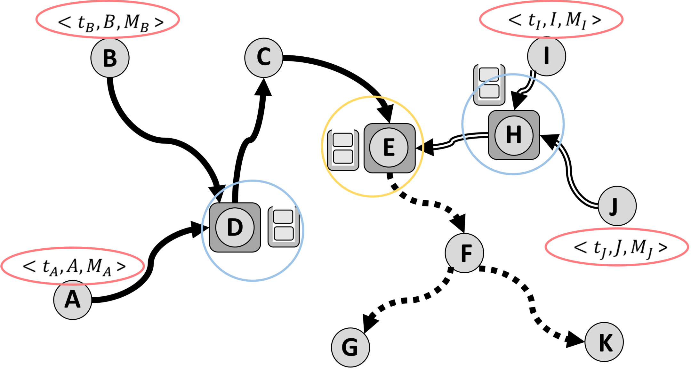

Overview

We make three original contributions:
- We develop the SocialMix model for trusted anonymous social networks so that communication privacy can be protected by k-anonymization.
- By considering the features of OSNs, we analyze the vulnerabilities of the naive methods that might be exploited to break the privacy. We develop new techniques to improve the attack-resilience of the SocialMix approach.
- We propose intelligent mix node selection methods to significantly reduce the required number of social mix nodes while still keeping high anonymization rate.
Motivation
Though the ID and Profile can be anonymized, the accumulated posted messages can be collected to re-identify the sender. The success rate depends on the background knowledge of the adversaries, which is always strong in trusted anonymous OSNs because the sender has a friendship with them.
Idea
Goal: We aim at ensuring high degree of user privacy while keeping communicating over a trusted over anonymous social network.
Idea: Shuffle the messages through message aggregation so that the relationship between the content of a message and the poster’s identity can be anonymized and perturbed.

SocialMix network - an example
- Suppose we have a network with 10 nodes.
- A,B,I,J send messages to D,H.
- <tA,A,MA> stands for node A sends message MA at time tA.
- D,H work as event-driven Mix nodes, also called pre-mix nodes.
- Node E works as intermediate mix node, also called post-mix node.

Publications
- Chao Li, Balaji Palanisamy and James Joshi, "SocialMix: Supporting Privacy-aware Trusted Social Networking Services", Proc. of 23rd IEEE International Conference on Web Services (ICWS 2016), San Francisco, USA.[PDF]